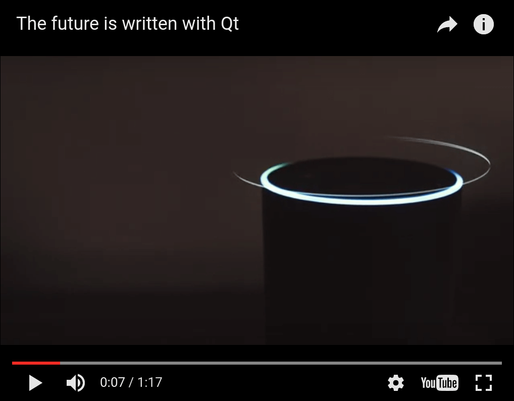

WebEngine Widgets Video Player Example
Displays full screen video using QWebEngineView.

Video Player demonstrates how to support full screen playback of HTML5 video using QWebEngineView.
The Fullscreen API is a cross-browser Javascript API that enables a web page to request that one of its HTML elements be made to occupy the user's entire screen. It is commonly used for full screen video playback via the <video> element, but can in principle be used to display any HTML content in full screen mode. Qt WebEngine supports this API, however it is disabled by default. This example shows the steps needed to switch it on, including:
- Enabling it in QWebEngineSettings.
- Handling the QWebEnginePage::fullScreenRequested signal by creating a new full screen window.
- Displaying a notification popup to ensure that the user is aware that something is being displayed full screen.
Running the Example
To run the example from Qt Creator, open the Welcome mode and select the example from Examples. For more information, visit Building and Running an Example.
Overview
Once started, the example program will create a normal (non-fullscreen) window with a QWebEngineView showing an embedded YouTube video player. You can then click on the full screen toggle button (bottom-right corner) to enter full screen mode. This should also display a centered notification overlay informing you that you can exit full screen mode by pressing the escape key.
Implementation-wise entering full screen mode entails creating a new full screen window with a separate QWebEngineView instance and migrating the QWebEnginePage from the normal window's QWebEngineView to this new QWebEngineView. Exiting full screen mode reverses this migration.
The example code is divided between three classes, MainWindow, FullScreenWindow, and FullScreenNotification. The classes MainWindow and FullScreenWindow are each responsible for managing one top-level window, while FullScreenNotification is responsible for styling and animating the notification box. A MainWindow is created on startup and lives for the entire program runtime, while a new FullScreenWindow is created every time full screen mode is entered.
MainWindow Class Declaration
A MainWindow is a QMainWindow with a QWebEngineView as the central widget:
#include "fullscreenwindow.h" #include <QMainWindow> #include <QWebEngineView> #include <QWebEngineFullScreenRequest> class MainWindow : public QMainWindow { Q_OBJECT public: explicit MainWindow(QWidget *parent = nullptr); private slots: void fullScreenRequested(QWebEngineFullScreenRequest request); private: QWebEngineView *m_view; QScopedPointer<FullScreenWindow> m_fullScreenWindow; };
MainWindow Class Definition
In the constructor we start by setting up the QWebEngineView as the central widget:
MainWindow::MainWindow(QWidget *parent) : QMainWindow(parent) , m_view(new QWebEngineView(this)) { setCentralWidget(m_view);
We then configure Qt WebEngine to advertise support for the Fullscreen API:
m_view->settings()->setAttribute(QWebEngineSettings::FullScreenSupportEnabled, true);
Without this line the full screen toggle button would be disabled (grayed out) as the Javascript running on the page can detect that our browser does not support full screen mode.
Next we connect the fullScreenRequested signal to our slot:
connect(m_view->page(),
&QWebEnginePage::fullScreenRequested,
this,
&MainWindow::fullScreenRequested);
This signal is emitted whenever the Javascript on the page wants to enter or exit full screen mode. Without handling this signal (but still keeping the FullScreenSupportEnabled attribute as true) the toggle button will be enabled but clicking on it will have no effect as Javascript's full screen request will be denied.
Finally, we load some HTML (see webenginewidgets/videoplayer/data/index.html included with the example) into our QWebEngineView:
m_view->load(QUrl(QStringLiteral("qrc:/index.html")));
The second part of MainWindow is handling the full screen requests:
void MainWindow::fullScreenRequested(QWebEngineFullScreenRequest request) { if (request.toggleOn()) { if (m_fullScreenWindow) return; request.accept(); m_fullScreenWindow.reset(new FullScreenWindow(m_view)); } else { if (!m_fullScreenWindow) return; request.accept(); m_fullScreenWindow.reset(); } }
We create a new FullScreenWindow when entering full screen mode, and delete it when exiting.
FullScreenWindow Class Declaration
A FullScreenWindow is a QWidget containing a QWebEngineView and a FullScreenNotification.
#include <QWidget> QT_BEGIN_NAMESPACE class QWebEngineView; QT_END_NAMESPACE class FullScreenNotification; class FullScreenWindow : public QWidget { Q_OBJECT public: explicit FullScreenWindow(QWebEngineView *oldView, QWidget *parent = nullptr); ~FullScreenWindow(); protected: void resizeEvent(QResizeEvent *event) override; private: QWebEngineView *m_view; FullScreenNotification *m_notification; QWebEngineView *m_oldView; QRect m_oldGeometry; };
FullScreenWindow Class Definition
The constructor is responsible for hiding the normal window (while saving its geometry) and showing the new FullScreenWindow instead:
FullScreenWindow::FullScreenWindow(QWebEngineView *oldView, QWidget *parent) : QWidget(parent) , m_view(new QWebEngineView(this)) , m_notification(new FullScreenNotification(this)) , m_oldView(oldView) , m_oldGeometry(oldView->window()->geometry()) { m_view->stackUnder(m_notification); auto exitAction = new QAction(this); exitAction->setShortcut(Qt::Key_Escape); connect(exitAction, &QAction::triggered, [this]() { m_view->triggerPageAction(QWebEnginePage::ExitFullScreen); }); addAction(exitAction); m_view->setPage(m_oldView->page()); setGeometry(m_oldGeometry); showFullScreen(); m_oldView->window()->hide(); }
The call to QWebEngineView::setPage will move the web page from the MainWindow's view to FullScreenWindow's view.
In the destructor we use the same method to move the page back, after which we restore the main window's geometry and visibility:
FullScreenWindow::~FullScreenWindow() { m_oldView->setPage(m_view->page()); m_oldView->window()->setGeometry(m_oldGeometry); m_oldView->window()->show(); hide(); }
We override QWidget::resizeEvent to do manual layout, keeping the QWebEngineView maximized, and the FullScreenNotification centered within the window:
void FullScreenWindow::resizeEvent(QResizeEvent *event) { QRect viewGeometry(QPoint(0, 0), size()); m_view->setGeometry(viewGeometry); QRect notificationGeometry(QPoint(0, 0), m_notification->sizeHint()); notificationGeometry.moveCenter(viewGeometry.center()); m_notification->setGeometry(notificationGeometry); QWidget::resizeEvent(event); }
FullScreenNotification Class Declaration
A FullScreenNotification is just a QLabel with some styling and animation:
#include <QLabel> class FullScreenNotification : public QLabel { Q_OBJECT public: FullScreenNotification(QWidget *parent = nullptr); protected: void showEvent(QShowEvent *event) override; signals: void shown(); private: bool m_previouslyVisible; };
FullScreenWindow Class Definition
In the constructor we configure the QLabel and set up a delayed fade-out animation using The Animation Framework:
FullScreenNotification::FullScreenNotification(QWidget *parent) : QLabel(parent) , m_previouslyVisible(false) { setText(tr("You are now in full screen mode. Press ESC to quit!")); setStyleSheet( "font-size: 24px;" "color: white;" "background-color: black;" "border-color: white;" "border-width: 2px;" "border-style: solid;" "padding: 100px"); setAttribute(Qt::WA_TransparentForMouseEvents); auto effect = new QGraphicsOpacityEffect; effect->setOpacity(1); setGraphicsEffect(effect); auto animations = new QSequentialAnimationGroup(this); animations->addPause(3000); auto opacityAnimation = new QPropertyAnimation(effect, "opacity", animations); opacityAnimation->setDuration(2000); opacityAnimation->setStartValue(1.0); opacityAnimation->setEndValue(0.0); opacityAnimation->setEasingCurve(QEasingCurve::OutQuad); animations->addAnimation(opacityAnimation); connect(this, &FullScreenNotification::shown, [animations](){ animations->start(); }); connect(animations, &QAbstractAnimation::finished, [this](){ this->hide(); }); }
The custom signal shown, which we use to trigger the animation, is emitted from the showEvent method:
void FullScreenNotification::showEvent(QShowEvent *event) { QLabel::showEvent(event); if (!m_previouslyVisible && isVisible()) emit shown(); m_previouslyVisible = isVisible(); }